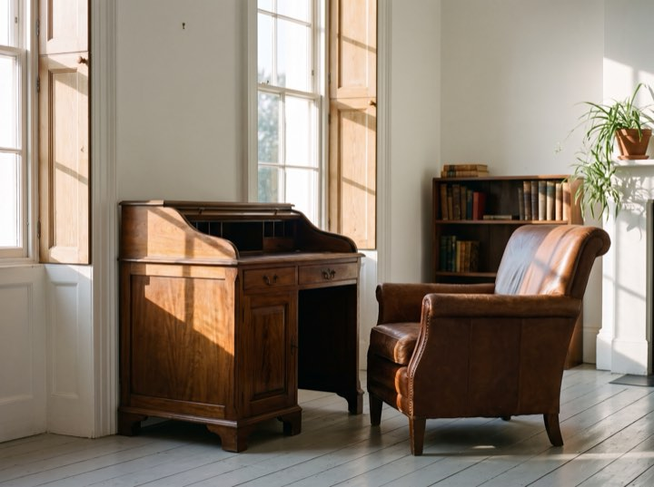
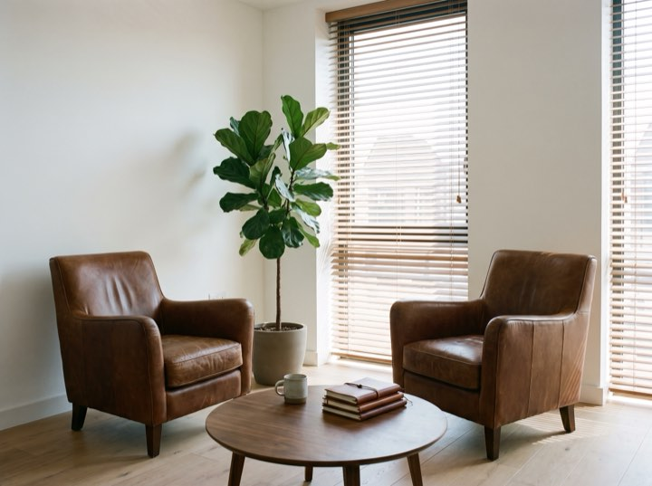

Fee-only fiduciary · RIA
Fee-only fiduciary advice for families and business owners. The entire fee schedule is printed on this page: no commissions, no product sales, no third-party payments, and no number you have to book a meeting to hear.
Fee-only · Fiduciary · Registered Investment Adviser
Fee-only. Fiduciary. Fee schedule published. No products sold, ever.
Planning first. Investment management matters, but it is rarely the thing that changes an outcome.
Cash flow, tax, insurance and estate structure, reviewed annually. The plan is the product; the portfolio implements it.
Low-cost, globally diversified and tax-aware. We do not attempt to time markets and we will tell you why.
Concentrated position planning, sale structuring and what happens to a family the year after a liquidity event.
We meet your adult children at no additional cost. Most families lose their adviser at inheritance; that is a failure of relationship, not returns.
Three conversations before anyone signs anything, and no cost until you decide to proceed.
Half an hour, no cost, no preparation needed. Mostly us listening and you deciding whether you like us.
We gather everything and analyse it properly: tax returns, statements, insurance, estate documents. Two to three weeks.
Presented in full and in plain English, including the parts of your current arrangement we think are wrong. Yours to keep whether or not you engage us.
Quarterly reviews, annual deep planning, and access between times without watching a clock.
The statement
The fee schedule on the page above is the same sheet that sits on this desk.


A second opinion costs nothing and takes about an hour. Half the people who come for one go back to their existing adviser reassured, and that is a fine outcome.
Fee-only. Fiduciary. Fee schedule published. No products sold, ever.